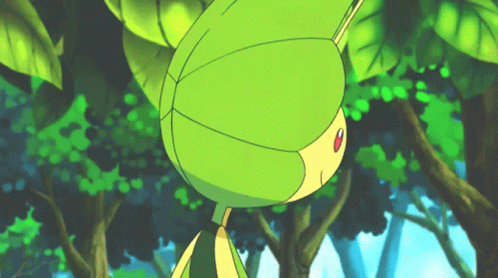

Results

"Want to see what the API PokeAPI about my favorite Pokemon, Leavanny? Click this button!"
Lab 15 - AJAX
Challenge
The main point of this lab was to experiment with jQuery and more importantly, AJAX.
Problems
Bulk of the problems came from figuring out how to connect the AJAX to our button.
Reflection
I enjoyed this lab overall! It was fun to puzzle through how to get the API onto the HTML! I wish there was a way to make our output shorter though, but the long output was the same with the original API, so we played it safe and left it like that.
Challenge
The main point of this lab was to experiment with jQuery and more importantly, AJAX.
Problems
Bulk of the problems came from figuring out how to connect the AJAX to our button.
Reflection
I enjoyed this lab overall! It was fun to puzzle through how to get the API onto the HTML! I wish there was a way to make our output shorter though, but the long output was the same with the original API, so we played it safe and left it like that.